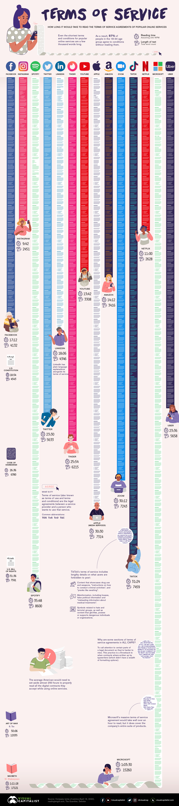

Week 8: From Data Ethics to Data Policy
DSAN 5450: Data Ethics and Policy
Spring 2024, Georgetown University
Wednesday, March 13, 2024
What is Policy? And What is Data Policy?
Prelim: Conflict-of-Interest Disclosure
- Just as I laid out my biases at the beginning of the “high-level” ethics unit…
- Now I lay out my biases at the beginning of the policy unit!
- tldr: in US context, when I encounter “policy debates”, this is what they look like to me:
Discourse Around “Data Policy” in the US Senate
- (This is ~the level at which “national conversations” are conducted around big data)
Prelim: Conclusion (Again, Solely My Opinion, Which I Wish I Didn’t Have)
- The US is, imo, entirely hopeless on this front… short of a massive socio-political realignment on a scale that has never before occurred, sensible and just policies (data-focused or otherwise) are for all intents and purposes impossible
- US approach to social problems: fight “wars” against them, deport people, throw millions into prisons, blame CCP and their Singaporean CEO running dogs, blame Russian election-interferers, give billions of $ to Israeli election-interferers, and so on
- (Previous examples) War on Drugs, War on Poverty, War on “Welfare Queens”
- (Future examples, you owe me a lunch when they are announced) War on School Shootings, War on Climate Change, War on Lack of Healthcare, War on Long Lines
- But also: my opinion truly doesn’t matter for purposes of learning about data policy
- Important takeaway #1: I would be very very happy to be proven wrong!
Pessimism of the intellect, optimism of the will.
—Antonio Gramsci, Founder of the PCI, 1920 (Imprisoned by Mussolini in 1926, died in prison in 1937)
Actually-Relevant Takeaway
- Unlike the US, there are countries and national/international institutions where policies are formed, in varying degrees, by processes in which data comes into play
- We’ll discuss more examples; two I can speak to directly given work as data consultant:
- EU: Consulted on project around implementation of GDPR
- UNESCO: Received grant for data-analysis of international translation policies
- 194 UN member states who participate in formation of these policies
- 2 UN member states who refuse to participate on basis of “anti-Israel bias” (you’ll never guess which ones! Hint: Apartheid South Africa, Rhodesia used to provide 3rd and 4th vote in this bloc, but no longer exist)
- NY MTA: Consulted on project studying NYC subway data, until passage of NYS Executive Order 157 banning state funding for any person or organization supporting boycott of Israel
¯\_(ツ)_/¯
\(\implies\) Comparative Perspective
- We’ll study various countries / international orgs and their attempts to tackle data policy issues (with hope that takeaways can be applied to the US someday as well)
- Important to retain descriptive/normative distinction!
- They’ll become harder to distinguish, as we discuss:
- What are the policies currently in existence?
- What are their drawbacks?
- And, among the latter, which ones could be addressed via policy? (requires understanding processes of policy formation) Which ones could not? (impossibility results…)
The Present-Day Policy Framework (Descriptive): Notice and Consent
OECD Guidelines, 1980
- “The basis for most modern privacy laws” (Sugimoto, Ekbia, and Mattioli 2016)
- Collection Limitation Principle: data may be collected “where appropriate, with the knowledge or consent of the data subject.” (OECD 1980, 14)
- Use Limitation Principle: “Personal data should not be disclosed, made available or otherwise used for purposes other than those specified [at time of collection] except with the consent of the data subject” (OECD 1980, 15)
EU Data Protection Directive, 1995
- Art. 7: Processing allowed when “the data subject has unambiguously given his [sic] consent.”
- Art. 8: Use of sensitive data is restricted, except where “the data subject has given his [sic] explicit consent to the processing of those data.”
- Art. 26: Prohibits export of personal data to non-European countries lacking “adequate data protection”, except when “the data subject has given his [sic] consent unambiguously to the proposed transfer” (European Union 1995)
- Superceded by GDPR in 2018
EU General Data Protection Regulation (GDPR), 2018
«Consent is one of the easiest to satisfy because it allows you to do just about anything with the data» (—the text right below this screenshot)
Reading / Implementing the GDPR
- Main document: 261 pages
- For SaaS companies: a nice, 34-page abridgement
Why We Have To Stop the Individual-Policy-Level Descriptive Part Here
(And await your final policy papers!)
From Piwik.pro, “17 Privacy Laws Around the Globe”
(Normative) Issues with Notice and Consent
The Crux of the Normative Issues

Does Reading = Understanding?
- Does reading \(\implies\) understanding implications / contingencies / ambiguities?
- NLP could (and should!) be helpful (“making privacy policies machine readable […] would help users match privacy preferences against policies offered by web services”), but mostly just reveals how bad the problem is:

Figure 15 from Wagner (2023). “Obfuscatory words” are words like acceptable, significant, mainly, or predominantly, interpretated at the discretion of companies rather than users (see next slide!)
The Fundamental Problem of Contracts
- Just as we can’t observe two simultaneous worlds \(W_{X = 0}\) and \(W_{X = 1}\) which differ only in the value of \(X\),
- We can’t foresee all possible contingencies that need to be included in a contract
- (We can try, though! Hence use of obfuscatory words to minimize liability)
- So, when a situation arises which is not covered by a clause in the contract, what happens? What principle determines whose interpretation wins out?
- (Hint: It is actually literally my legal middle name…)
…POWER!
- Examples from employment contracts (tooting own horn):
- In a private, cooperatively-owned, democratic firm, outcome determined by conversation, majority vote, unanimity, etc.
- These technically exist in the US! Employing 2,380 workers, \(\frac{2380}{127509000} \approx 0.0019\%\) of US workforce
- Otherwise, in a non-unionized private firm (94% of total), the outcome is determined by organizational hierarchy
- This is the case for \(\frac{125000000}{127509000} \approx 98.03\%\) of US workforce
Descriptive and Normative Implications
- Who has power w.r.t. incompleteness of contracts?
- Who ought to have power w.r.t. incompleteness of contracts?
- And now I can talk about the EU thing…
- (It wasn’t implemented)
- (But idk statute of limitations)
- (Oh well)
🔥I think it’s more useful to, like, make things happen now, and then, like, apologize later🔥 —Mark Zuckerberg the 🐐
References
DSAN 5450 Week 8: From Data Ethics to Data Policy